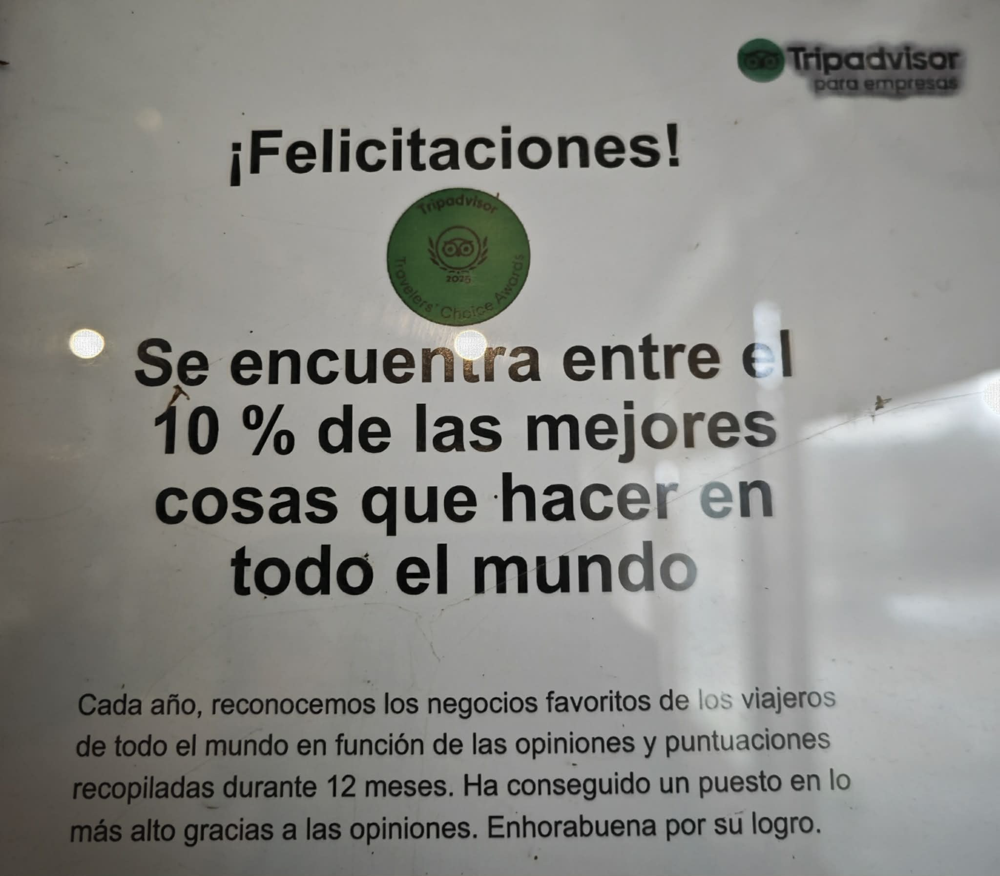

Les gauchos
Découvrir la vie, les traditions et l'hospitalité des habitants de la région, accompagnés par des guides qui connaissent la montagne.

Dix jours d'évasion, huit jours à cheval au cœur des montagnes de Salta. Des immensités préservées, la culture gaucho et le bonheur de s'émerveiller.
Demander une inscription ↗Après plusieurs mois passés dans ce pays, l'envie est simple : partager les paysages, les chevaux, les traditions et les personnes qui ont rendu ce voyage inoubliable.
Les deux premières nuits sont consacrées à l'accueil au ranch, à la découverte des chevaux et à une sortie dans une peña, lieu de musique et de convivialité. Puis viennent sept nuits dans la montagne, au rythme des chevaux et de la nature.
Trois régions, trois climats et une grande diversité de paysages pour découvrir Salta, « Salta la Linda ».

Découvrir la vie, les traditions et l'hospitalité des habitants de la région, accompagnés par des guides qui connaissent la montagne.
Des chevaux habitués à leur travail, suivis et respectés. La sécurité et le plaisir des cavaliers guident le séjour.
Des journées à cheval, des paysages changeants, des repas partagés et des nuits sous une voûte étoilée.

La randonnée s'adresse aux cavaliers à l'aise aux trois allures : pas, trot et galop. Pas de difficulté technique particulière annoncée : les chevaux connaissent leur travail. Huit jours en selle demandent néanmoins une bonne condition physique.
Les participants organisent leur arrivée de manière autonome. L'aéroport le plus proche est celui de Salta ; le transfert depuis Salta vers le ranch est prévu dans l'organisation du séjour, selon les modalités à confirmer.
Le séjour compte dix jours et neuf nuits : les deux premières nuits autour du ranch, puis sept nuits en montagne, avec huit jours d'équitation.
Le tarif annoncé est de 2 500 USD, avec un acompte de 500 USD pour réserver sa place, sous réserve de confirmation des conditions de réservation. Contactez-nous pour recevoir les informations détaillées et la brochure.

Le ranch partenaire présente une distinction Tripadvisor Travelers' Choice 2025, attribuée aux établissements faisant partie des 10 % les mieux évalués sur la plateforme. Information à confirmer auprès du ranch pour l'établissement concerné.